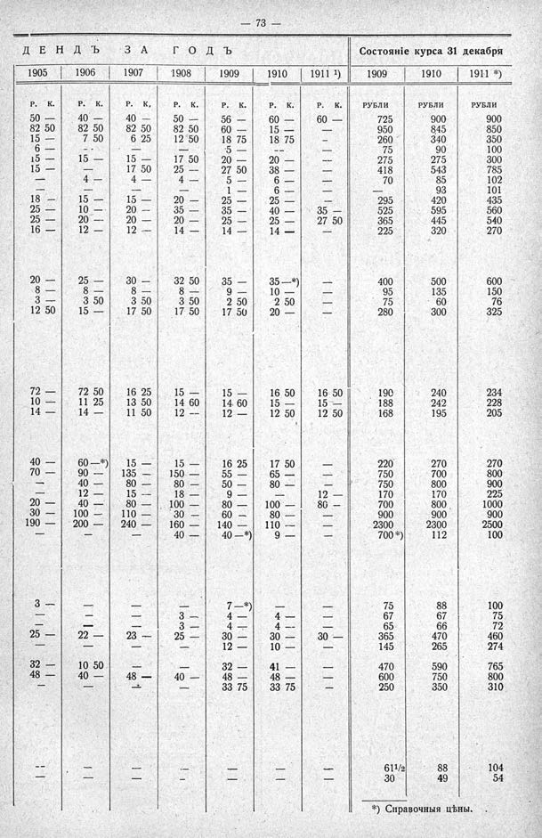

Лист источника 119
Скан

Распознанный текст
— 73 —
Д Е Н Д Ъ З А Г О Д Ъ Состояніе курса 31 декабря
1905 1906 1907 1908 1909 1910 1911 ¹) 1909 1910 1911 *)
Р. К. Р. К. Р. К. Р. К. Р. К. Р. К. Р. К. РУБЛИ РУБЛИ РУБЛИ
50 — 40 — 40 — 50 — 56 — 60 — 60 — 725 900 900
82 50 82 50 82 50 82 50 60 — 15 — — 950 845 850
15 — 7 50 6 25 12 50 18 75 18 75 — 260 340 350
6 — — — — 5 — — — 75 90 100
15 — 15 — 15 — 17 50 20 — 20 — — 275 275 300
15 — — 17 50 25 — 27 50 38 — — 418 543 785
— 4 — 4 — 4 — 5 — 6 — — 70 85 102
— — — — 1 — 6 — — — 93 101
18 — 15 — 15 — 20 — 25 — 25 — — 295 420 435
25 — 10 — 20 — 35 — 35 — 40 — 35 — 525 595 560
25 — 20 — 20 — 20 — 25 — 25 — 27 50 365 445 540
16 — 12 — 12 — 14 — 14 — 14 — — 225 320 270
20 — 25 — 30 — 32 50 35 — 35 —*) — 400 500 600
8 — 8 — 8 — 8 — 9 — 10 — — 95 135 150
3 — 3 50 3 50 3 50 2 50 2 50 — 75 60 76
12 50 15 — 17 50 17 50 17 50 20 — — 280 300 325
72 — 72 50 16 25 15 — 15 — 16 50 16 50 190 240 234
10 — 11 25 13 50 14 60 14 60 15 — 15 — 188 242 228
14 — 14 — 11 50 12 — 12 — 12 50 12 50 168 195 205
40 — 60 —*) 15 — 15 — 16 25 17 50 — 220 270 270
70 — 90 — 135 — 150 — 55 — 65 — — 750 700 800
— 40 — 80 — 80 — 50 — 80 — — 750 800 900
— 12 — 15 — 18 — 9 — — 12 — 170 170 225
20 — 40 — 80 — 100 — 80 — 100 — 80 — 700 800 1000
30 — 100 — 110 — 30 — 60 — 80 — — 900 900 900
190 — 200 — 240 — 160 — 140 — 110 — — 2300 2300 2500
— — — 40 — 40 —*) 9 — — 700 *) 112 100
3 — — — — 7 —*) — — 75 88 100
— — — 3 — 4 — 4 — — 67 67 75
— — — 3 — 4 — 4 — — 65 66 72
25 — 22 — 23 — 25 — 30 — 30 — 30 — 365 470 460
— — — — 12 — 10 — — 145 265 274
32 — 10 50 — — 32 — 41 — — 470 590 765
48 — 40 — 48 — 40 — 48 — 48 — — 600 750 800
— — — — 33 75 33 75 — 250 350 310
— — — — — — — 61¹/2 88 104
— — — — — — — 30 49 54
*) Справочныя цѣны.